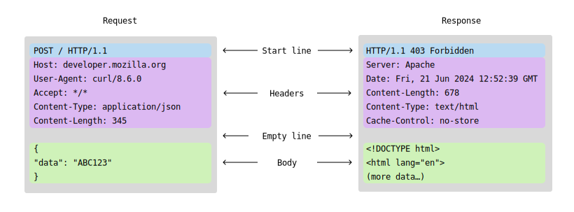

Web Servers
Most web browsers get the content they display from servers:

The communication is almost universally done using HTTP, which is a message based client-server protocol.
HTTP Messages
Although HTTP is not connection based, it is typically used on TCP, which has convenient reliability guarantees. Originally, HTTP/1.0 opened a separate connection for every request/response pair. This turned out to be very slow because it takes several round-trips to establish a connection. HTTP/2 multiplexes many messages over a single TCP connection.
There are only a few request methods or verbs:
- GET/HEAD
- - requests data from the server. HEAD asks for the metadata only.
- POST
- - sends data to the server. PUT seems to be similar.
- DELETE
- - removes a resource from the server.
- PATCH
- - partial modifications to a resource at the server.
HTTP is extensible and flexible, and has lots of support packages for both client and server implementations.
Rocket
Rocket is an async web framework for Rust.
#![allow(unused)] fn main() { #[macro_use] extern crate rocket; #[cfg(test)] mod tests; #[derive(FromFormField)] enum Lang { #[field(value = "en")] English, #[field(value = "ru")] #[field(value = "ру")] Russian } #[derive(FromForm)] struct Options<'r> { emoji: bool, name: Option<&'r str>, } // Try visiting: // http://127.0.0.1:8000/hello/world #[get("/world")] fn world() -> &'static str { "Hello, world!" } // Try visiting: // http://127.0.0.1:8000/hello/мир #[get("/мир")] fn mir() -> &'static str { "Привет, мир!" } // Try visiting: // http://127.0.0.1:8000/wave/Rocketeer/100 #[get("/<name>/<age>", rank = 2)] fn wave(name: &str, age: u8) -> String { format!("👋 Hello, {} year old named {}!", age, name) } // Note: without the `..` in `opt..`, we'd need to pass `opt.emoji`, `opt.name`. // // Try visiting: // http://127.0.0.1:8000/?emoji // http://127.0.0.1:8000/?name=Rocketeer // http://127.0.0.1:8000/?lang=ру // http://127.0.0.1:8000/?lang=ру&emoji // http://127.0.0.1:8000/?emoji&lang=en // http://127.0.0.1:8000/?name=Rocketeer&lang=en // http://127.0.0.1:8000/?emoji&name=Rocketeer // http://127.0.0.1:8000/?name=Rocketeer&lang=en&emoji // http://127.0.0.1:8000/?lang=ru&emoji&name=Rocketeer #[get("/?<lang>&<opt..>")] fn hello(lang: Option<Lang>, opt: Options<'_>) -> String { let mut greeting = String::new(); if opt.emoji { greeting.push_str("👋 "); } match lang { Some(Lang::Russian) => greeting.push_str("Привет"), Some(Lang::English) => greeting.push_str("Hello"), None => greeting.push_str("Hi"), } if let Some(name) = opt.name { greeting.push_str(", "); greeting.push_str(name); } greeting.push('!'); greeting } #[launch] fn rocket() -> _ { rocket::build() .mount("/", routes![hello]) .mount("/hello", routes![world, mir]) .mount("/wave", routes![wave]) } }
#![allow(unused)] fn main() { #[launch] fn rocket() -> _ { rocket::build() .mount("/", routes![hello]) .mount("/hello", routes![world, mir]) .mount("/wave", routes![wave]) } }